Week 6: Useful Relics From the Past
Everything Good Must Come to an End
Inspiration: Sarah Newman | Vik Muniz | Karen Trefzger
Throwing things out gives you a great insight about the objects you are surrounded by in daily life. Whether that be things you used to use a lot but not anymore, things that have lost their use, or even things you just forgot about. When you throw something out that you’ve had for a while, even if just for a moment, you think about the memories you’ve had with the object and what that thing used to do for you.
In addition, when you think back to those memories, you may recall certain phases you’ve had in your life. Perhaps that might be a phase where you bought a lot of camera equipment or when you were really into shoes, either way, when you throw them out, it can tell you a lot about your past self.
It's for these reasons that I’ve been recording my trash for the past 6 weeks. In that time, I’ve remembered old parts of my past self, realized how I treat the things I buy, and more. Perhaps through reading what I’m writing, you might even be inspired to do this yourself!
The Update for the Week
I’m honestly surprised that I’ve made it this far. I suppose that means that I have more trash than I thought I did. Perhaps that may say something about how much I care about the things that I own. Or maybe that might mean that I don’t buy things too often. Either way I have 3 categories for the objects this week.
After this week, I may struggle finding trash around me that I’d be willing to throw away, but we’ll get to that when next week arrives.
The Metallics: Worn and Rusted
The first group of objects will be the metals. The three objects are my old forearm trainer, nail clippers, and scissors.
My forearm trainer is a spring based grip trainer that allows you to move the spring to adjust the tension and therefore the grip strength required to complete a motion. My nail clippers are a relatively small, smooth, metal contraption that can sometimes be difficult to grip. My scissors are classic metal scissors with a grey and red plastic handle.
I got the grip trainer 5 years ago during my junior year of high school when I first started strength training. I got my nail clippers about 6 years ago during my sophomore year of high school when I moved to my mom’s house. I got my scissors around 3 years ago when I entered Rutgers and needed scissors for my dorm room.
I have a few good memories with each of these items. I remember the first time I managed to do 130lbs on the grip trainer which really showed me my progress over the years. For the nail clippers, I remember when I learned how to prevent ingrown toenails and purposely stopped clipping my nails at an angle. Lastly, I remember making my first origami flowers with the red scissors.
As for why I’m throwing these items away, I’m throwing away the grip trainer because the adjustor for the weight has rusted internally and no longer moves properly. The nail clippers have gotten old and the clipping mechanism has begun to be less smooth as before. The scissors have gotten sticky and cutting has become a bit annoying.
Self-care: Used Up and Exhausted
The second group of objects will be the self-care items that I’ve used up. The 3 items in this group are my night lip balm, my liquid bandaid, and my Tums.
The night balm is a deep shade of blue and is a tiny tube. My liquid bandaid is a glass bottle with a plastic label and cap. There is a small brush inside for applying the liquid evenly on wounds. The Tums is a blue-tinted plastic bottle with a blue cap.
I got my lip balm from my mom around 2 years ago and she got it for me because she knew that I always got dry chapped lips. I got my liquid bandaid a long long time ago (10 years ago by now) and it has treated nearly every open-wound I’ve had since then. The Tums I got from my girlfriend Rosy last year who knows that I have a weak digestive system and tend to need them for stomach aches.
I remember a few things about these objects. First, I remember when I first used the night lip balm and it cured my dry lips overnight. I thought it was magic. At the time, I had never really used lip balm so this was a game changer for me. For the liquid bandaid, I remember when I got a massive knee scrape from falling off my bike when I was young. My dad had treated it with this liquid bandaid and I still have the scar today. And just the other day, I remember having digestive problems after dinner yesterday and I took a Tums tablet to instantly relieve that stomach ache.
Each of these objects I am throwing away because I have used it all up and I am excited to get new ones.
The Objects That Lost Their Purpose
The third group of objects are items that have lost their purpose. For one reason or another, I no longer have a use for these items, whether it be broken, partially missing, or just useless now. The three items in this group are a deck of cards (with missing cards), a ticket to the National 9/11 Museum, and a broken Airpod tip.
The deck of cards is worn with tears on the sides and edges of the case. It’s a square paper box with red and blue colors on its label. The ticket to the National 9/11 Museum is a firm, thick, rectangular piece of paper with text and a QR code printed onto it. The Airpod tip is a small, circular, and rubbery material that has a plastic screen embedded within the ear tip to protect the inner part of the Airpod.
I got the deck of cards in the beginning of sophomore year of college about 1 year ago for my roommates and I to play card games with. I got the ticket to the National 9/11 Museum about 6 months ago when my mom gave it to me for me and my friends to go to the museum together. She originally gave me 6 but we used 5 of them. I received my Airpod pros from my uncle the summer before I started college (3 years ago) as a gift before I went back to the U.S.
My greatest memory with the deck of cards was being able to play card games with my roommate with some freshly cooked food and drinks. Being able to laugh together with some of my favorite people has been a great blessing. My greatest memory of the ticket was being able to go to NYC with my friends last weekend to see the museum before the tickets expired. It was an amazing experience and the tragedy felt so much more real to me (as someone who was born after 9/11). The most memorable thing about my Airpod tip was that it accompanied me almost anywhere I went. Whether that was walking to class, going to the gym, or anything else, I’d always have my Airpods on me.
I’m throwing away the deck of cards because so many cards have gone missing that I’ve deemed it necessary to replace them. As for the ticket, my friends and I have gone to the museum alongside the fact that they expire very soon and therefore I’m throwing it out. Lastly, the Airpod tip has broken and therefore can no longer function properly.
Gallery of Objects
 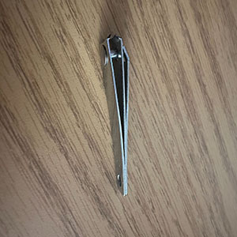
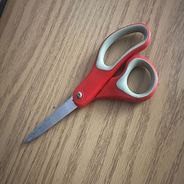
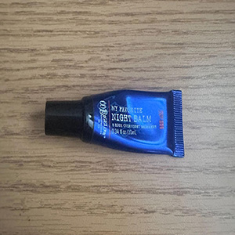
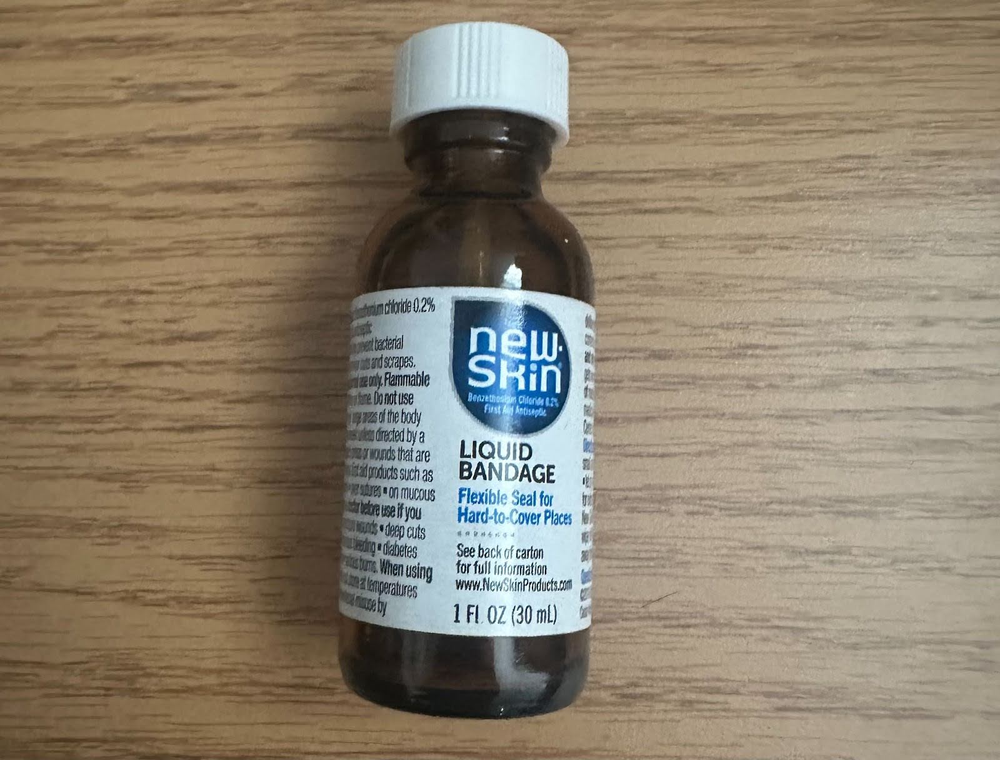
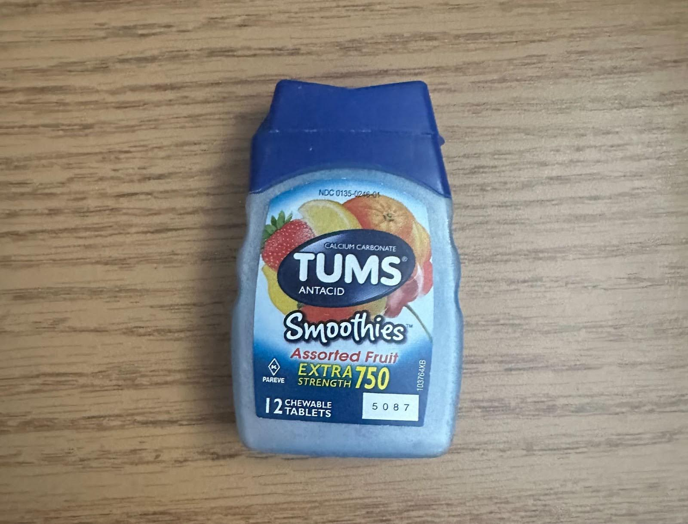
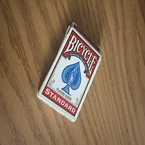
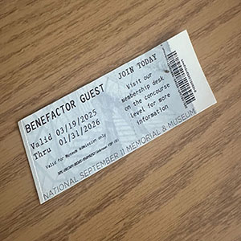
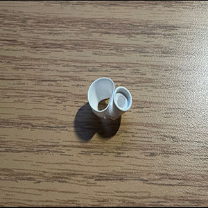
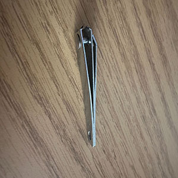
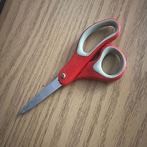
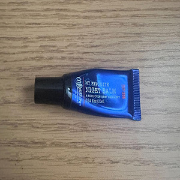
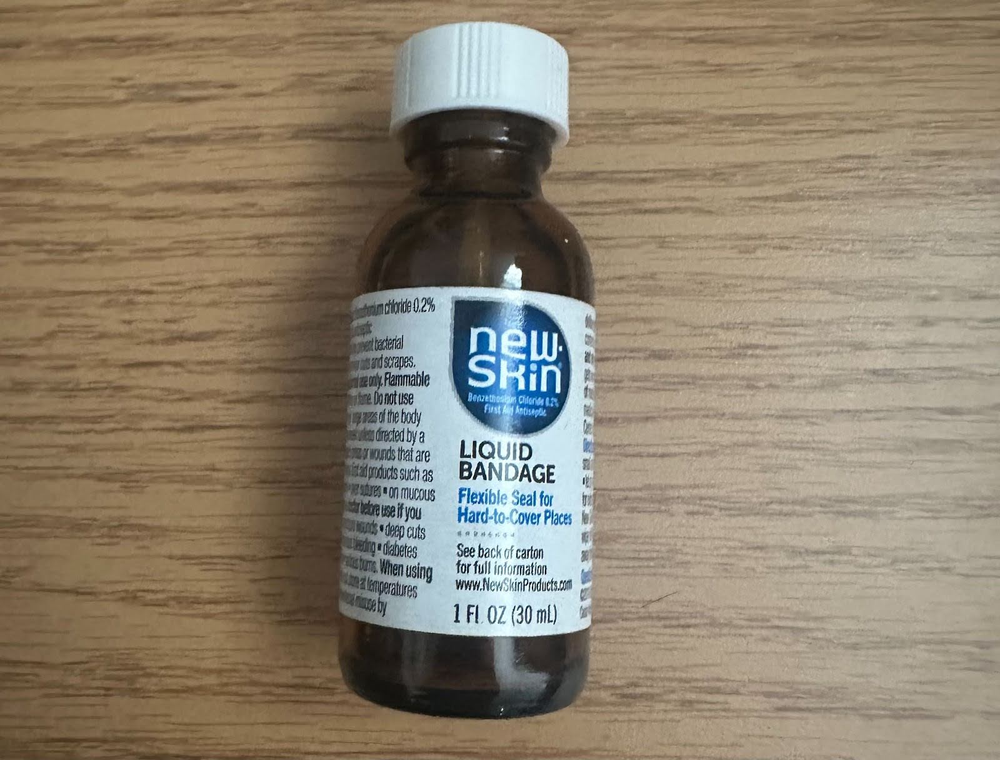
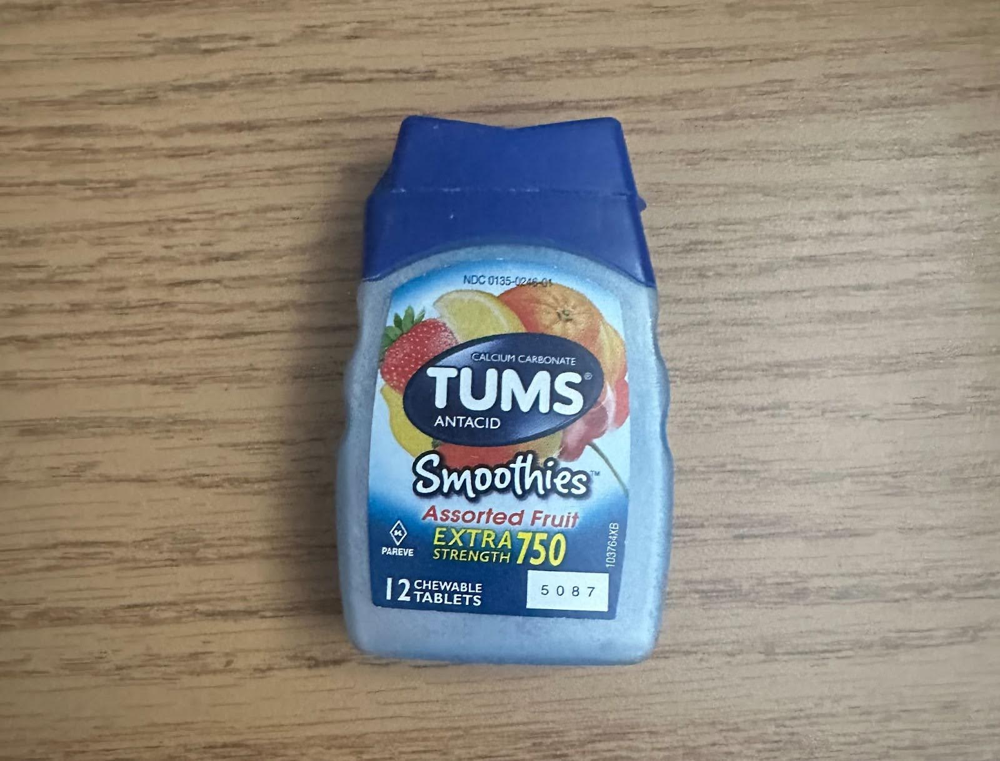
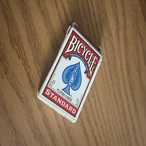
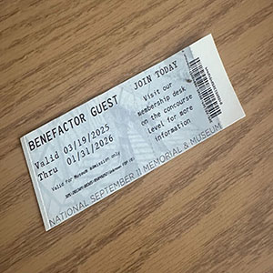
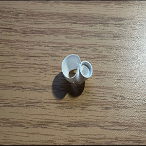
Item Data
| Item | Weight | Source | Location | Cost | Owned | Mode | Rating |
|---|---|---|---|---|---|---|---|
| Grip Trainer |
1lb | Amazon | Desk Drawer | $10 | 5 years | Given Away | 7/10 |
| Nail Clipper |
125g | Amazon | Desk Drawer | $5 | 6 years | Trashed | 5/10 |
| Scissors | 600g | Amazon | Desk Drawer | $7 | 3 years | Trashed | 6/10 |
| Night Balm |
20g | Mom | Nightstand | $9 | 2 years | Trashed | 10/10 |
| Liquid Bandaid |
130g | Dad | Medkit | $6 | 10 years | Recycled | 10/10 |
| Tums | 80g | Rosy | Nightstand | $2.50 | 1 year | Recycled | 10/10 |
| Deck of Cards |
100g | Amazon | Living Room Table | $3.00 | 1 year | Trashed | 8/10 |
| 9/11 Museum Ticket |
<1g | Mom | Wallet | $38 | 6 months | Recycled | 10/10 |
| Airpod tip |
<1g | Uncle | Airpod | $10 | 3 years | Trashed | 10/10 |
- Trashed
- Recycled
- Given Away
Coda: Thank you for Reading!
This week’s trash was filled with old, memorable, and important things that have been with me for a long time. Though I feel bittersweet about throwing these items away, I find peace in the fact that I loved these things and used them to their greatest extent. I look forward to seeing what items I may throw away next week. Thank you for reading about my trash and feel free to comment anything you have questions about or would like to share!